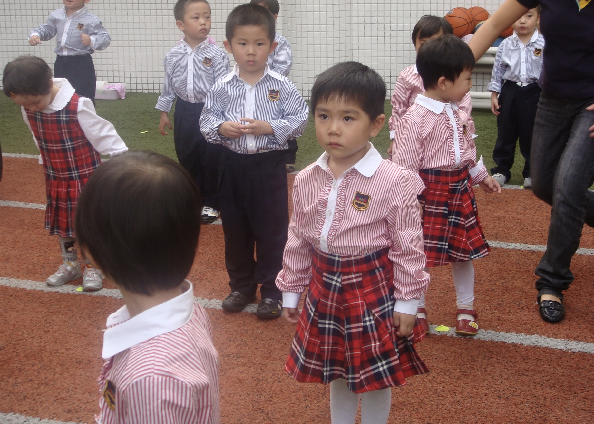
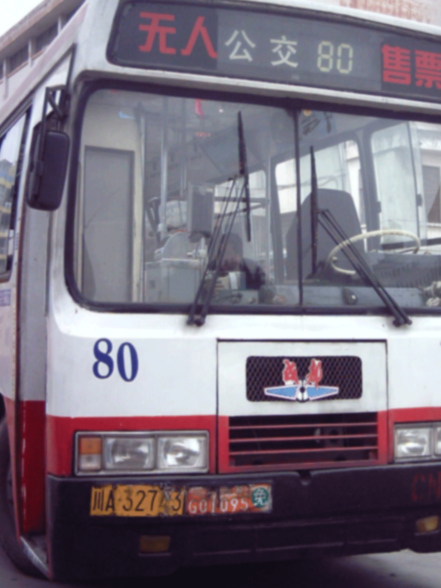

About
About
About
About
 Mall
Mall
 School
School
 Street
Street
 Park
Park
 Home
Home
 Transportation
Transportation
 Memories
Memories
POV: You just double-clicked on a memory folder from the 2000s.
Welcome back to Generation Z!!

System prompt: Loading memory...
This project is a personal archive of disappearing urban memories between 2000 and 2010, traced through the fading soundscapes and visuals of my hometown — Chengdu. Using real family photos, ambient recordings, and street fragments, I reassemble the mundane beauty of local life that once defined my daily rhythm.
From malls to schoolyards, parks to public transport, each section preserves a corner of globalized standardization of modern life. This site is not a critique, but a very gentle and soft act of remembering.
In an age when even memory is outsourced to data, City Echo asks: can we still hear the city that raised us?
Close your eyes. Do you remember which store was the brightest?
Before the city renovation, red taxis danced like candies on Luoma Market street.
I remember the sky was always blue, and the street filled with buzzing sounds.
August 2028
My sister always took me on that spinning kiddie ride in the mall. We wobbled inside while a loud, funny tune played. That corner is now a Starbucks.
Who decides when a city's memory gets retired? Spaces once built for kids have been replaced by algorithm-driven storefronts. Even corners meant for fun no longer exist.
Can we still have the right to choose nostalgia?
Leave your own memory here—anything you recall from this place: a thought, a feeling, a smell, a scene.
Close your eyes. Can you return to the class just by listening?
Before online learning became the norm, we sat quietly under the glowing classroom TV. In the back, someone sipped warm milk while the old water dispenser hummed in the corner.
October 2028
Back then in kindergarten, the red plaid uniforms, the morning broadcast — they all blend into a hazy but vivid childhood memory. Now, those sounds and scenes are slowly vanishing, living only in old photos.
Who decides when childhood sounds become irrelevant? The bell that once rang across the playground is now just a muted file in someone’s archive.
We used to chant texts aloud, chasing the rising sun within school bags.
But the rhythm is gone.
Did we forget it, or were we told to?
Leave your own memory here—anything you recall from this place: a thought, a feeling, a smell, a scene.
Close your eyes. The sound of a bike bell—are you back at that old intersection?
I still remembers the heat of noon at the street crossing. Motorbikes buzzed like insects, plastic umbrellas bloomed above the heads. Noise, smell, and sweat — these were once the rhythms of a city.
June 2027
My dad lifted me up high by the pond, and we both turned toward the sound of a motorcycle rushing past. That brief second, the hum of engines, sun on the water, my tiny sandals swinging — became a still frame in my memory. Now, the street feels quieter, not because the noise is gone, but because we've grown apart from it.
Leave your own memory here—anything you recall from this place: a thought, a feeling, a smell, a scene.
Close your eyes. Can the crunch of an apple bring you back to the park bench?
Before playgrounds became gated zones or vanished into blueprints, we chased shadows and splashed water with bare feet. Someone’s grandma peeled fruit on a bench, and laughter echoed between trees.
April 2009
Back then in the park, the willow crowns, muddy puddles, and unfinished towers all shimmered with sunlight and laughter. It wasn’t beautiful in the usual way, but it was ours. Now, those colors and corners only survive in blurry photo prints.
Leave your own memory here—anything you recall from this place: a thought, a feeling, a smell, a scene.
Close your eyes. Can you find your way back through the sound of oil sizzling?
Before kitchens became sleek and silent, we stood barefoot on cold tiles, listening to the sizzle of garlic in oil. Someone washed vegetables in a red basin, while the rice cooker hissed like background music.
November 2007
Back then at home, the off-key notes, the chipped piano stool, and my elder sister’s serious face filled the room with warmth. It wasn’t a perfect melody, but it was ours. Now, that sound lingers only in home videos and quiet memory.
Leave your own memory here—anything you recall from this place: a thought, a feeling, a smell, a scene.
Close your eyes. Do you hear coins clink, engines hum, and people taking?
The seats were cracked, ad stickers peeling, and the driver tapped the steering wheel with a quiet rhythm. The bus arrived wrapped in dust and early morning light.
Spetember 2010
Back then in the car, I curled up with a cake box, lulled by the motion of the road and quiet conversations in the front seat. It wasn’t a special journey, but it felt safe. Now, that warmth only returns in sleep.
Leave your own memory here—anything you recall from this place: a thought, a feeling, a smell, a scene.